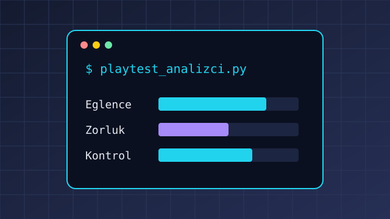

Playtest Geri Bildirim Analizcisi
Playtest oturumunda oyunculardan alınan puanların ortalamasını, en zayıf alanı ve ekibe öneriyi hesaplayan, sonucu CSV'ye kaydeden komut satırı uygulaması.
Ne öğrendim: Program hata vermeden çalışıyor diye doğru çalıştığını varsaymamayı; eşit puanlar gibi uç durumları test etmeyi öğrendim.